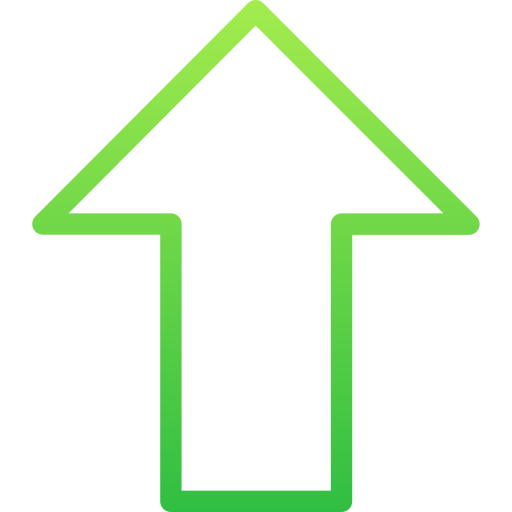
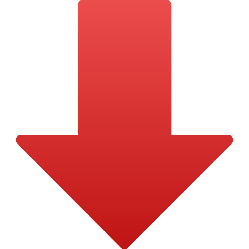
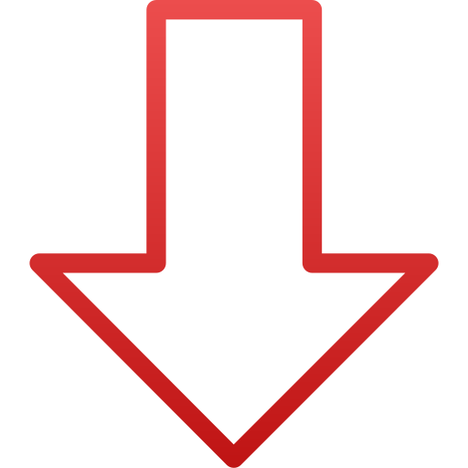

<div class="container wiki-container">
  <div class="row" style="position: fixed; top: 0; right: 0;">
    <div class="col-12">
      <language-button (languageChanged)="languageChanged($event)"></language-button>
    </div>
  </div>
  <div class="row">
    <br>
  </div>
  <div class="row">
    <div class="col-12">
      <h1> {{'wiki.wikiTitle' | translate }} </h1>
    </div>
  </div>
  <div class="row wikimenu">
    <div (click)="redirectToFAQs()" class="col-4 wikihighlightbutton"> {{'wiki.FAQButton' | translate }} </div>
    <div (click)="redirectToPhones()" class="col-4 wikibutton"> {{'wiki.phonesButton' | translate }} </div>
    <div (click)="redirectToDefinitions()" class="col-4 wikibutton"> {{'wiki.definitionsButton' | translate }} </div>
  </div>
  <div class="wikicontent" *ngFor="let faq of faqs;">
    <div class="row wikifaqcontent">
      <div class="col wikifaq">
        <div class="row wikiquestion">{{faq.question}}</div>
        <div class="row wikianswer">{{faq.answer}}</div>
        <div class="row votes">
          <div class="col-10"></div>
          <div class="col-2">
            <span class="upvotes" (click)="upvote(faq.id)">
              
              
              <span style="font-size: 10px;">{{faq.numUpvotes}}</span>
            </span>
            <span class="downvotes" (click)="downvote(faq.id)">
              
              
              <span style="font-size: 10px;">{{faq.numDownvotes}}</span>
            </span>
          </div>
        </div>
      </div>
    </div>
    <div class="row wikifaqspace"><br></div>
  </div>
</div>
